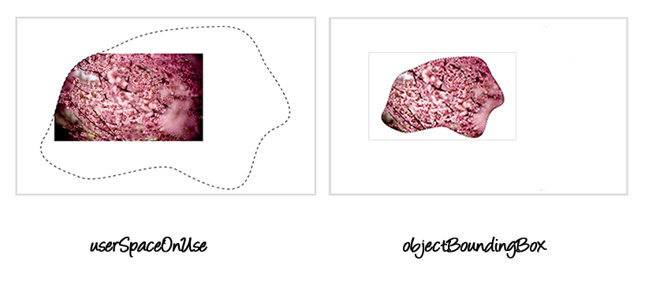
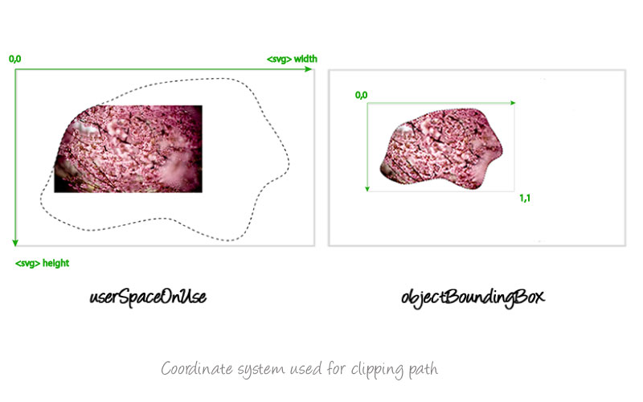

Clipping in CSS and SVG — The <code>clip-path</code> Property and <code><clipPath></code> Element
Published
|
Estimated Reading Time:
CSS and SVG have a lot in common. A lot of the features that we have in CSS today were imported from SVG. One of these features is the Clipping operation. Both CSS and SVG allow us to "clip" elements into custom non-rectangular shapes. In this article we will go over the clipping techniques in both CSS and SVG, covering everything you need to know to get started.
Please note that the demos in this article may not work in your browser. You should check this compatibility table out for more information. You don't need to view the live demos to follow up with the article. Not all clipping features are implemented and some features may be buggy. The purpose of this article is to go over how clipping works in CSS and SVG, and serves as a reference for when these features are fully implemented. I'm also not including any vendor prefixes in the code samples here, but they are included in the live demos.
What is clipping?
Clipping is a graphical operation that allows you to fully or partially hide portions of an element. The clipped element can be any container or graphics element. The portions of the element that are shown or hidden are determined by a clipping path.
A clipping path defines a region where everything on the “inside” of this region is allowed to show through but everything on the outside is “clipped out” and does not appear on the canvas. This region is known as the clipping region. Any parts of the element that lie outside of a clipping region are not drawn. This includes any content, background, borders, text decoration, outline and visible scrolling mechanism of the element to which the clipping path is applied, and those of its descendants.
The clipped element can be any container or graphics element.
A clipping path is conceptually equivalent to a custom viewport for the element it applies to. It influences what parts of the element are rendered on the screen, but it does not affect the element’s inherent geometry—the element will affect the flow around it as it normally would, and every other element on the page will still see and treat the element as if it were still rectangular, even if it’s clipped to a non-rectangular shape. If you want to change the way the content around the element flows and have it respond to the defined shape of the clip path, you can use the CSS Shapes properties. If you want to learn more about how to do that, you can check thearticles I wrote about this topic.
Clipping in CSS – The clip-path Property
The clip-path property is part of the CSS Masking Module. The clipping operation has been a part of SVG since 2000, and has moved into the CSS Masking module so that it now allows clipping HTML elements as well as SVG elements.
The clip-path property is used to specify a clipping path that is to be applied to an element. Using clip-path, you can apply an SVG <clipPath> to an element by referencing that path in the property value. You can also define a clipping path using one of the basic shapes defined in the CSS Shapes module. These shapes can be created using shape functions. The shape functions available are polygon(), circle(), inset() (used to define inset rectangles), and ellipse().
Applying a clipping path to an element using the clip-path property is very simple and straightforward:
/* Referencing an SVG clipPath */
.element {
clip-path: url(#svgClipPathID);
}
/* Using a CSS basic shape function */
.element {
clip-path: polygon(...); /* or one of the other shape functions */
}
For example, if we were to define a polygonal clipping path using the polygon() function, and then apply it to an image, the code would look like the following:
The basic shape functions allow us to create a limited number of shapes; the most complex of these shapes is a polygon. If you want to use a more complex shape that looks like more than just a group of connected straight lines, you can use the SVG <clipPath> element. As the name <clipPath> implies, you can clip to any arbitrary path. This means that you can use the <path> element to create any arbitrary path and use that as a clipping path.
In our second example, we’re going to define and use an SVG clipPath. The code for the clip path looks like the following:
Indeed, the <clipPath> element can contain any number of basic shapes (<rect>, <circle>, etc.), <path> elements, or even <text> elements.
If you specify a piece of <text> inside a <clipPath>, that text will be used as a clipping path. Whatever’s under the text will be visible “through” it, and anything outside the text area will not be rendered.
Note here that you can clip anything to the text. This opens a door for a lot of possibilities and effects. You can use animated images (such as GIFs) or even videos, and then clip them to some text of your choice. The sky is the limit here.
The following is an example of a piece of text used as a clipping path.
The cool thing about SVG <text> is that it can be displayed using a custom font, just like HTML text can. In this example I’m using the Vollkorn font from Google Web Fonts. I’ve set the width of the text to be the same as the width of the image, using the textLength attribute, and positioned the text using the x and y coordinates. Note here that the x and y coordinates determine the position of the bottom left corner of the text (where the bottom stands for the baseline of the text).
The result of applying the above text clip path to the image looks like so:
And as we mentioned, you can also use multiple basic shapes inside <clipPath>. We’ll dig into <clipPath> and its contents in the next section, so, for now, we’ll keep it simple. In this example I’m using multiple <circle>s, each with a different size and position.
As we mentioned at the beginning of this article, you can apply clip paths using the clip-path property to SVG elements too. In all of the above examples, the clipping paths were applied to an HTML <img>. In the following example, a clipping path is applied to the root <svg> element. The same cherry blossoms image we used above is now part of the SVG, referenced using the <image> element.
The <image> element in SVG is used to include a graphic that can be either an entire SVG or a raster image. If it’s an SVG you’re referencing in <image>, the width and height attributes will be used to establish the viewport of that SVG. If you’re referencing a raster image (which is what we’re doing here), the image will be scaled to fit in the specified width and height. So I made sure the aspect ratio of the width and height attribute match the aspect ratio of the image I’m using, to prevent it from being distorted.
When you create an <svg> document, you establish its viewport by specifying the width
and height of the <svg> element. Anything drawn outside the limits of the viewport will be clipped out and will not be displayed. You can establish a new custom viewport of your own with the <clipPath> element.
More examples applying a clipping path to an SVG element in the <clipPath> section below.
A Clipping Path's Reference Box
In addition to the clipping path itself, you can define a reference box in the clip-path property when the clipping path applied is a <basic-shape>; that is, a clipping path created using one of the basic shape functions. The reference box is hence only specified for CSS shapes used as clip paths, not for SVG <clipPath>s. For an SVG <clipPath>, the reference box is the border box of an HTML element.
So a reference box is specified for a <basic-shape> clip path. If the element being clipped is an HTML element, the reference box can be one of the four basic box model boxes: margin-box, border-box, padding-box, or content-box. Each of these is self-explanatory.
If the <basic-shape> clip path is applied to an SVG element, the reference box can be set to one of three keyword values:
fill-box – uses the object bounding box as the reference.
stroke-box – uses the stroke bounding box as the reference.
view-box – uses the uses the nearest SVG viewport as the reference box if no viewBox is specified. If a viewBox is indeed specified, then the coordinate system is established by the origin and dimensions specified by the viewBox.
If you set any of the CSS box model boxes as a reference box for an SVG element, the fill-box will be used. And if you use one of the SVG reference boxes on an HTML element, the border-box will be used.
.element {
clip-path: polygon(...) padding-box;
}
If only a reference box is specified in the clip-path property—that is, no basic shape is defined—the browser uses the edges of the specified box, including any corner shaping (e.g. defined by the border-radius property), as clipping path.
For example, using the following snippet, the element will be clipped to the rounded corners specified by border-radius:
Note that at the time of writing of this article, specifying a reference box in the `clip-path` property doesn't work in Webkit because it's not yet implemented.
clip-path Notes: Stacking Contexts, Pointer Events and Animations
It is important to know that any value other than the default none for the clip-path property results in the creation of a stacking context on the element the same way the opacity property does.
Any value other than the default `none` for the `clip-path` property results in the creation of a stacking context on the element.
Furthermore, according to the Masking specification, pointer events must not be dispatched on the clipped-out (non-visible) regions of a shape. This means that the element should not respond to pointer events outside the remaining visible area.
A clipping path can also be animated. If the clipping path used is an SVG <clipPath>, it can be animated by including an animation inside it (See next section for details). If the cipping path is a basic shape created using a basic shape function, it can be animated using CSS animations and transitions. For details on how to animate a shape created using a shape function, check out the Animating CSS Shapes with CSS Animations and Transitions article I wrote a while back.
Clipping in SVG – The <clipPath> Element
In SVG, the clipPath element is used to define a clipping path to clip elements. If you don’t want to use CSS to apply the clipping path to an element, you can do it in SVG using the clip-path presentation attribute.
Have you seen/read my "Styling and Animating Scalable Vector Graphics with CSS" slides? If not, you may want to have a look at them for more information about SVG presentation attributes and CSS properties used to style SVG elements. You can check them out here.
<svg>
<defs>
<clipPath id="myClippingPath">
<!-- ... -->
</clipPath>
</defs>
<!-- the element you want to apply the clipPath to can be any SVG element -->
<g id="my-graphic" clip-path="url(#myClippingPath)">
<!-- ... -->
</g>
</svg>
Contents Of a <clipPath>
We mentioned earlier that an SVG clipPath can contain any number of basic shapes, arbitrary <path>s, and/or <text> elements. It can even contain more than that, and this is where it can get interesting.
The <clipPath> content can be descriptive (<title>, <desc>, <metadata>). It can also be a shape (<circle>, <ellipse>, <line>, <path>, <polygon>, <polyline>, <rect>) or a <text>. A <clipPath> can also contain a <use> element or a <script>. Note that <use> in <clipPath> can only reference the simple SVG shapes mentioned above—it cannot be used to reference groups inside <clipPath>, for example; that simply won’t work.
And last but not least, a <clipPath> can contain an animation using <animate>, <animateColor>, <animateMotion>, <animateTransform>, or <set>. This opens a door for a lot of creativity, as you can imagine.
To demonstrate, I’m just going to add a simple animation to the demo using multiple <circle>s as a clipping path. Every <circle> will get an animation. Because I want to keep it simple, I’m just gonna use the same animation on all of the circles. You can create fancier effects using different effects and playing with animation delays, of course. But, since this is a 101 article, I’m gonna stay on the simple side. The code with the animations look like so:
The animation specified for each circle will animate the size of the circle—more specifically, its radius (r)—over the course of three seconds, from 0 to 250 pixels. I’ve also set the animation to repeat indefinitely.
Click on the following button to view the live demo. But before you do, note that there is a bug (see bug details here), so the demo may not work for you if you’re on Chrome or Safari. For now, I recommend using Firefox to see the working live demo, until the bug has been fixed.
Note that the content of a <clipPath> also cannot involve groups (<g>s). For example, if we were to add a group element to the demo that uses multiple circles as a clipping path, the demo will no longer work—the clipping path will no longer be applied to the image.
<svg height="0" width="0">
<defs>
<clipPath id="svgPath"> <!-- WILL NOT WORK -->
<g> <!-- WILL NOT WORK -->
<circle stroke="#000000" stroke-miterlimit="10" cx="193.949" cy="235" r="74.576"/>
<circle stroke="#000000" stroke-miterlimit="10" cx="426.576" cy="108.305" r="47.034"/>
<!-- ... -->
</g>
</clipPath>
</defs>
</svg>
The clipPathUnits Attribute
The <clipPath> element can have several attributes, including id, class, transforms, and presentation attributes like fill and stroke, among many others. But the one attribute that stands out, and that is particularly useful, is the clipPathUnits attribute.
The clipPathUnits attribute is used to specify a coordinate system for the contents of the <clipPath>.
The clipPathUnits attribute is used to specify a coordinate system for the contents of the <clipPath>. It takes one of two values: objectBoundingBox or userSpaceOnUse. The default value is userSpaceOnUse.
The contents of the clipPath represent values in the current user coordinate system in place at the time when the clipPath element is referenced (i.e., the user coordinate system for the element referencing the clipPath element via the clip-path property).
The current user coordinate system (a.k.a local coordinate system) is the coordinate system that is currently active and which is used to define how coordinates and lengths are located and computed. The user coordinate system for an HTML element with an associated CSS box model is different from that of an SVG element with no such box model.
For elements that have an associated CSS layout box, the current user coordinate system has its origin at the top left corner of a reference box and one unit equals one CSS pixel. The viewport for resolving percentage values is defined by the width and height of the reference box. I'm sure you're already familiar with this. So if you have a <clipPath> containing a <circle> whose center is positioned at cx = "100" and cy = "100", the center will be positioned 100 pixels to the left and 100 pixels down inside the boundaries of the reference box.
If the element is an SVG element and thus does not have an associated CSS layout box, the current user coordinate system has its origin at the top left corner of the element's nearest viewport. In most cases, the nearest viewport is the viewport established by the width and height of the closest <svg> ancestor. If you're not nesting <svg>s, it's simply the viewport you establish on the root <svg>.
Note that the coordinate system on an SVG element can be modified using the viewBox attribute, among other attributes which may contribute to changing the coordinate system. However, that's outside the scope of this article. So in this article I'm going to work under the assumption that no viewBox is modified, and hence the browser will use the default coordinate system with the origin at the top left corner, and dimensions equal to the dimensions of the <svg>.
objectBoundingBox
The coordinate system has its origin at the top left corner of the bounding box of the element to which the clipping path applies to and the same width and height of this bounding box. A bounding box is the object bounding box for all SVG elements (it contains only an element's geometric shape) and the border box for HTML elements with an associated box model.
This value is particularly useful for SVG elements because it allows you to apply the clip path to the boundaries of the element itself, not the coordinate system on use. To demonstrate, here is an image showing the result of applying the clip path to an image inside an SVG canvas using userSpaceOnUse versus objectBoundingBox. The grey border represents the border of the <svg> element where the viewport is set. For the image on the right, I've added a grey border around the clipped image just to show the boundaries of the bounding box.

The result of applying the clipPath to an image inside the SVG canvas using userSpaceOnUse (left) and objectBoundingBox (right).
In the image on the left, the clipping path is positioned in the coordinate system established on the viewport of the SVG. When using objectBoundingBox, the bounding box of the image itself is used as the coordinate system of the clipping path.
One important thing to note here is that when you use the objectBoundingBox value, the coordinates specified for the contents of the <clipPath> must be in the range [0, 1]—the coordinate system becomes a unit system, and the coordinates of the shapes inside a clipPath have to be fractions in that range.

The coordinate system used for the objectBoundingBox value on the right, versus that used for the userSpaceOnuse on the left.
For example, if the clip path being applied to an element contains a circle positioned so that its center lies at the center of the clipped element:
The fractions are like percentage values in this case.
<clipPath> Notes
clipPath elements are never rendered directly; their only usage is as something that can be referenced using the clip-path property. The display property does not apply to the clipPath element; thus, clipPath elements are not directly rendered even if the display property is set to a value other than none, and clipPath elements are available for referencing even when the display property on the clipPath element or any of its ancestors is set to none.
Remember what we said earlier about pointer events when an HTML element is clipped? The same standard behavior is defined in the SVG Clipping and Masking specification: By default, pointer-events must not be dispatched on the clipped (non-visible) regions of an SVG element. The spec then mentions that later versions of SVG may define new properties to enable fine-grained control over the interactions between hit testing and clipping.
Firefox implements the same non-standard behavior we mentioned before—areas outside the clipping regions do not respond to pointer events.
Even though Chrome implements the standard behavior for the clip-path property on HTML elements, when you apply a <clipPath> to an SVG element, the behavior is the same as the one implemented in Firefox—only the visible areas respond to pointer events. I’m not sure if this is a feature or a bug.
In the following example, an SVG <clipPath> is applied to an SVG <image>. The clip path is similar to the one we used before, where the image is clipped by a number of rectangles. The image becomes translucent when you hover over it.
Also, note that an empty clipping path will completely clip away the element that had the clip-path property applied.
Final Words
Clipping is one of those graphical operations that allow us to create irregular shapes in an otherwise rectangular web page. Indeed, clipping is a perfect companion to CSS shapes. If you’ve read any of my previousarticles about CSS Shapes, then you already know that the clip-path property can be an indispensable companion to CSS Shapes in some use cases. And once CSS Shapes properties can reference SVG paths (CSS Shapes Module Level 2), in addition to the basic CSS shapes, the combination of Shapes and Clipping will allow us to create visually compelling designs that break the norms of the rectangle.
I hope you found this article useful. Thank you for reading!